with probability
with probability ![\(T=\left[1+\frac{V_0^2\sinh^2\kappa a}{4E(V_0-E)}\right]^{-1}\approx16\frac{E}{V_0}(1-\frac{E}{V_0})e^{-2\kappa a}\)](m/e06c6fad3c63517ca620de22aabdc778aa126afb.svg) ; for smooth barriers WKB gives
; for smooth barriers WKB gives Statement: rectangular barrier
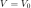
for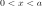
(Gamow 1928; Gurney and Condon 1928). Incident from the left: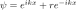
; inside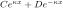
,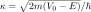
; right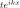
. Matching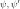
at both edges (4 equations, 4 unknowns) gives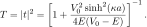
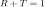
. For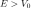
,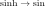
with real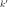
: transmission resonances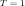
when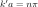
.WKB approximation
Write
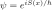
and expand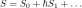
: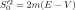
,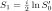
(Wentzel 1926). Hence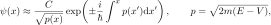
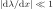
. Connection formulas at turning points give (Kramers 1926)- tunnelling:
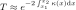
; - Bohr–Sommerfeld:
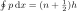
for bound states.
Worked example
Electron,
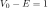
eV,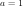
nm: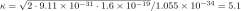
nm ,
, 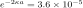
. Thinning to 0.5 nm gives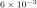
: two orders of magnitude for half a nanometre. This exponential sensitivity is why the STM resolves single atoms and why gate oxides below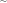
1.5 nm leak.Engineering applications
- Scanning tunnelling microscope: current
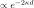
, ~10× per Å. - Flash memory: Fowler–Nordheim tunnelling through a triangular barrier (WKB) charges the floating gate.
- Gate leakage in thin oxides → high-k dielectrics.
- Tunnel diodes, resonant tunnelling diodes, Josephson junctions, alpha decay (Gamow factor).
Pitfall
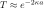
uses of the amplitude; the factor 2 comes from
of the amplitude; the factor 2 comes from 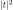
. Do not use WKB near turning points or for abrupt barriers thinner than a wavelength.